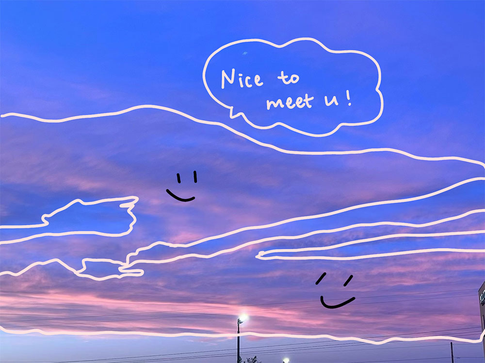
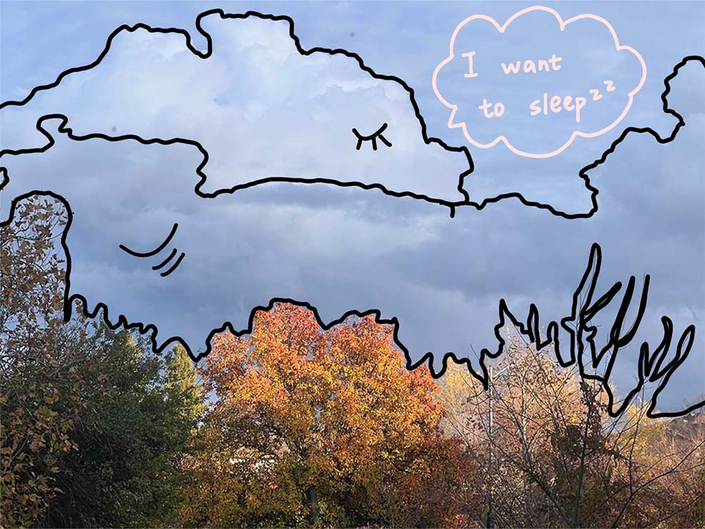
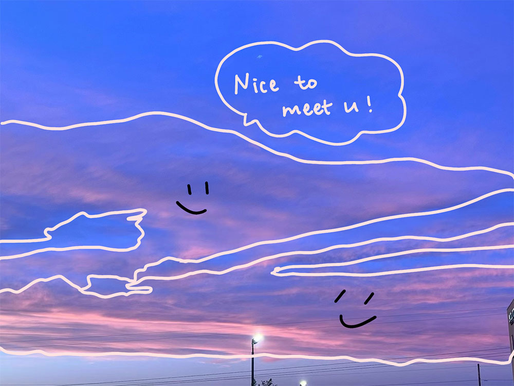
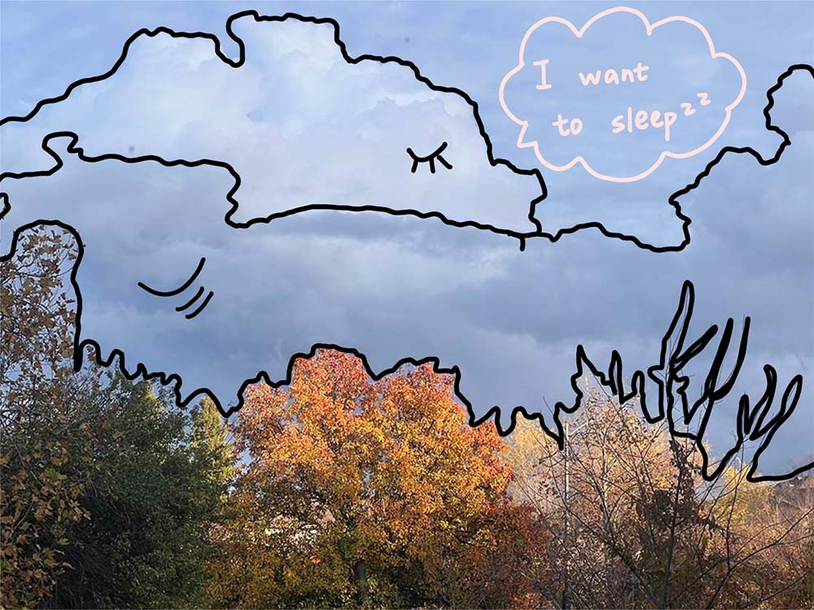

Section 1
Cirrostratus is found in the upper troposphere, around 6,000-12,000 meters in height. It mainly composed of ice crystals due to the very low temperatures at those heights. Cirrostratus appears as large, thin, veil-like or hazy layers that can cover a vast portion of the sky, sometimes nearly all of it.
Section 2
Altocumulus is found in the mid-level troposphere, around 2,000-7,000 meters in height. It is mainly composed of water droplets, though ice crystals can form under colder conditions. Altocumulus appears as patches or layers of rounded cloudlets that can sometimes cover large portions of the sky.
Section 3
Cumulus is found in the lower troposphere, around 500-3,000 meters in height. It is mainly composed of water droplets, though ice crystals can form at higher altitudes or in colder conditions. Cumulus appears as large, fluffy, cotton-like clouds with well-defined edges that can develop into towering formations under the right atmospheric conditions.
Section 4
Stratocumulus is found in the lower troposphere, around 500-2,000 meters in height. It is mainly composed of water droplets, though ice crystals can form in colder conditions. Stratocumulus appears as low, extensive, lumpy cloud layers that can cover a vast portion of the sky, sometimes nearly all of it, often with breaks that allow glimpses of sunlight.

Section 5
Stratocumulus is found in the lower troposphere, around 500-2,000 meters in height. It is mainly composed of water droplets, though ice crystals can form in colder conditions. Stratocumulus appears as low, extensive, lumpy cloud layers that can cover a vast portion of the sky, sometimes nearly all of it, often with breaks that allow glimpses of sunlight.